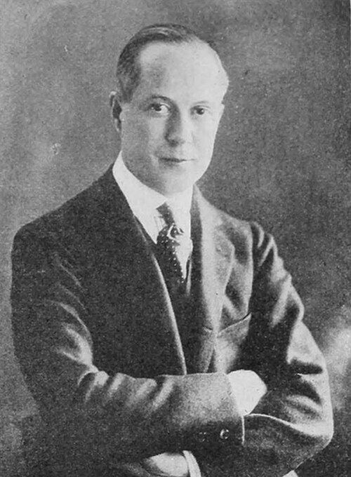
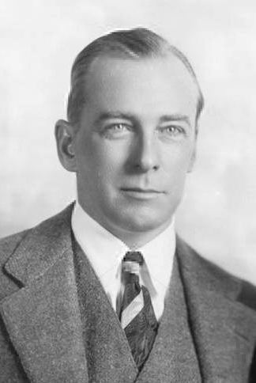

Archives / People
The brothers
People
The Fraternity's notable alumni, each one linked to every page of the archive that names him. 91 of the 93 have been found in the scanned volumes so far, across 2,633 volume appearances in all.
Politics 19

Chester A. ArthurTheta 1848 · Union College56 volumes

Eugene SchuylerBeta 1859 · Yale University95 volumes

George Bird GrinnellBeta 1870 · Yale University19 volumes

William Howard TaftBeta 1878 · Yale University104 volumes

Nicholas Murray ButlerLambda 1882 · Columbia University77 volumes

Henry L. StimsonBeta 1888 · Yale University54 volumes

Owen J. RobertsTau 1895 · University of Pennsylvania49 volumes

W. Averell HarrimanBeta 1913 · Yale University35 volumes

Robert A. LovettBeta 1915 · Yale University43 volumes

Nelson A. RockefellerZeta 1930 · Dartmouth College62 volumes
JD
Jack D. HarbyUpsilon 1937 · University of Rochester8 volumes

Robert O. AndersonOmega 1939 · University of Chicago35 volumes

John Paul StevensOmega 1941 · University of Chicago75 volumes

William H. WebsterGamma 1945 · Amherst College10 volumes

Paul MartinNu 1961 · University of Toronto8 volumes

Thomas d'AquinoZeta Zeta 1962 · University of British Columbia8 volumes

William S. CohenKappa 1962 · Bowdoin College41 volumes

Tommy VietorIota 2002 · Kenyon College2 volumes

Stefanos KasselakisTau 2009 · University of Pennsylvania2 volumes
Business 23

Alfred "Doc" MortonOmicron 1919 · University of Illinois125 volumes

William Roy DeWitt WallaceDelta Delta 1931 · Williams College66 volumes
WT
W. Thomas BeebeMu 1937 · University of Minnesota56 volumes
SD
Samuel D. HigginbottomLambda 1943 · Columbia University10 volumes

William C. FordPhi 1947 · University of Michigan12 volumes
RB
Robert BushRho 1950 · University of Wisconsin11 volumes

John B. FeryTheta Theta 1953 · University of Washington44 volumes
JC
James C. MorganChi 1960 · Cornell University35 volumes

Dennis Anthony TitoDelta 1962 · New York University4 volumes
JE
John Edward CleghornEpsilon Phi 1962 · McGill35 volumes
PA
P. Anthony RidderPhi 1962 · University of Michigan8 volumes

T. Gary RogersEpsilon 1963 · University of California, Berkeley14 volumes
JW
Joel W. JohnsonPsi 1965 · Hamilton College13 volumes
WF
William F. "Rick" CronkEpsilon 1965 · University of California, Berkeley63 volumes
DA
David A.B. BrownEpsilon Phi 1966 · McGill University77 volumes
JH
Jeffrey H. CoorsChi 1967 · Cornell University6 volumes

Alan LafleyPsi 1969 · Hamilton College7 volumes
PH
Peter H. CoorsChi 1969 · Cornell University12 volumes
RH
Richard HayneEta 1969 · Lehigh University6 volumes
TO
Tom O'BrienPi 1983 · Syracuse University
JS
Jean SalataTau 1988 · University of Pennsylvania6 volumes

Anthony "Tony" FadellPhi 1991 · University of Michigan6 volumes

Sam KennedyBeta Beta 1995 · Trinity College1 volumes
Entertainment 24

William LeBaronOmega-Delta 1905 · University of Chicago, New York University18 volumes

George F. AbbottUpsilon 1911 · University of Rochester30 volumes

Charles BrackettXi 1915 · Wesleyan University19 volumes

Richard BarthelmessBeta Beta 1917 · Trinity College33 volumes

John Ringling NorthRho 1925 · University of Wisconsin26 volumes

Charles StarrettZeta 1926 · Dartmouth College28 volumes

John Beal (James Bliedung)Tau 1930 · University of Pennsylvania32 volumes

Clayton "Bud" CollyerDelta Delta 1931 · Williams College10 volumes

Robert RyanZeta 1931 · Dartmouth College12 volumes
DK
Douglas KennedyGamma 1937 · Amherst College11 volumes
TW
Tom WymanGamma 1951 · Amherst College47 volumes
MH
Michael HerrPi 1961 · Syracuse University11 volumes

Rick LenzPhi 1961 · University of Michigan10 volumes

W. Stacy KeachEpsilon 1963 · University of California, Berkeley12 volumes

Peter WernerZeta 1968 · Dartmouth College89 volumes
JW
John WildhackPi 1980 · Syracuse University33 volumes

Christopher MeledandriZeta 1981 · Dartmouth College6 volumes
BG
Brad GoodeEpsilon Nu 1984 · Michigan State10 volumes
Dan BrownGamma 1986 · Amherst College11 volumes

Danny ZukerPi 1986 · Syracuse University7 volumes

Michael B. BayXi 1986 · Weslyan University7 volumes
GC
Guymon CasadyTau 1991 · University of Pennsylvania

Kyle CookeBeta Beta 2005 · Trinity College5 volumes
MM
Matthew MeagherEpsilon Nu 2020 · Michigan State1 volumes
Athletics 13

Amos Alonzo StaggBeta 1888 · Yale University100 volumes

Fred FolsomZeta 1895 · Dartmouth College9 volumes

George M. Lott Jr.Omega 1928 · University of Chicago40 volumes

John "Jay" BerwangerOmega 1936 · University of Chicago62 volumes

Charles B. "Bud" WilkinsonMu 1937 · University of Minnesota75 volumes

William W. WirtzSigma 1951 · Brown University27 volumes

Jim HanifanEpsilon 1955 · University of California, Berkeley8 volumes

Marty DomresLambda 1969 · Columbia University12 volumes

Edward MarinaroChi 1972 · Cornell University18 volumes
SH
Steve HawesTheta Theta 1972 · University of Washington31 volumes
JW
Joseph William "Jay" Monahan IVBeta Beta 1993 · Trinity College3 volumes

Ben CheringtonGamma 1996 · Amherst College6 volumes
BH
Billy HoganBeta Beta 1996 · Trinity College7 volumes
Writers & Publishers 9

Horatio Alger Jr.Alpha 1852 · Harvard University52 volumes

Charles Rockwell LanmanBeta 1871 · Yale University2 volumes

Gilbert H. GrosvenorGamma 1897 · Amherst College43 volumes

Archibald MacLeishBeta 1915 · Yale University47 volumes
JU
John U. CrandellZeta 1940 · Dartmouth College17 volumes
EB
Edward B. FiskeXi 1959 · Wesleyan University10 volumes
Harlan F. CobenGamma 1984 · Amherst College10 volumes
JA
Jeffrey A. MarxEpsilon Omega 1984 · Northwestern University11 volumes
JH
Jake HookerZeta 1995 · Dartmouth College8 volumes